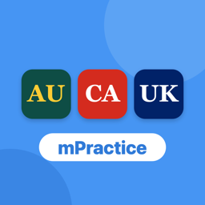

mPractice Citizenship Test
Practise for the citizenship test of Australia, Canada or the United Kingdom.
mPractice Citizenship Test is one app with three tests. When you open it, choose your test: Australia, Canada or United Kingdom. Each test has its own questions, rules, colours and progress.
What it does
- Full mock test with the same number of questions and pass rule as the real test
- Practise by topic or chapter, key questions or random
- Random mode with no repeats until you have seen every question
- A short explanation after each answer, and every mistake to review at the end
- Timer per question, or no timer
- Large buttons and clear text
- Works offline, with no ads and no account
- Free, with 1 practice session a day for each test
- A one-time purchase unlocks unlimited practice for one test, no subscription
- Light or dark theme, or follow your iPhone
- Choose your app icon: all tests, Australia, Canada or UK
- Menus in English, 繁體中文, 简体中文, 日本語, 한국어, Bahasa Indonesia, हिन्दी and ไทย (questions stay in English)
🇦🇺 Australia
- 111 practice questions based on the testable sections of the official book Australian Citizenship: Our Common Bond
- 4 parts of the book: Australia and its people, democratic beliefs, government and the law, and Australian values
- 24 Australian values questions, with a values-only practice mode
- 47 key questions that people often get wrong
- Full mock test: 20 questions with 3 answers each, always with 5 values questions, like the real test
- To pass, you need 75% and all 5 values questions correct
Why did I fail the mock test with 75% or more?
Like the real test, you must get all 5 Australian values questions correct to pass. If you miss one, you do not pass, even with a high score. Use the values-only mode to practise them.
Where can I find the official rules?
🇨🇦 Canada
- 501 practice questions in 10 topics, based on the official study guide Discover Canada: The Rights and Responsibilities of Citizenship
- Topics: rights and responsibilities, who we are, history, modern Canada, government, elections, justice, symbols, economy and regions
- 170 key questions that people often get wrong
- Multiple choice and True/False questions (135 True/False)
- Full mock test: 20 questions, 15 correct (75%) to pass, answers shown at the end, like the real test
Why is an answer different from my copy of the guide?
Some facts in older copies of the guide are out of date, for example King Charles III, the 2021 oath and the 343 electoral districts. In these questions, the explanation gives you both today's fact and what the guide says.
Where can I find the official rules?
On canada.ca.
🇬🇧 United Kingdom
- 455 practice questions in 5 chapters, based on the official handbook Life in the United Kingdom: A Guide for New Residents (3rd edition)
- Chapters: values and principles, what is the UK, history, modern society, government and the law
- 177 key questions that people often get wrong
- Single answer, True/False and choose-TWO questions, like the real test
- Full mock test: 24 questions, 18 correct (75%) to pass, answers shown at the end, like the real test
How do choose-TWO questions work?
Tap two answers, then tap Submit Answer. You need both answers right to get the point, like the real test.
Why is an answer different from today's facts?
The test still uses the 3rd edition handbook, and some facts in it are out of date, for example the monarch, the population and the jury age. In these questions, the explanation gives you both the handbook answer and today's fact.
Where can I find the official rules?
On GOV.UK.
Common questions
How do I change the test?
Tap ← All tests at the top of the test page, or the flag button at the top right. You can also tap the Settings button (the gear at the top right) and choose a test. Each test keeps its own scores and progress.
Are these the real test questions?
No. The questions are based on the official study guides of each country. They are not the real test questions. All explanations are written in our own words.
Is this an official government app?
No. mPractice Citizenship Test is an unofficial practice tool. It is not made by, linked to or approved by the Australian Government (Department of Home Affairs), the Government of Canada (IRCC) or the UK Government (Home Office). Always check the official website for the latest rules.
Does it work without internet?
Yes. All questions are built into the app, so it works fully offline.
How do I clear my scores?
Tap Clear under Recent Sessions. This clears the scores of the test you are using. Deleting the app also removes all your scores and progress.
How does the free version work?
You get 1 practice session a day for each test, in any mode. The session is used when you answer the first question. A new free session is ready the next day.
What do I get when I unlock?
Unlimited practice for that test, every day, in every mode. Each test is a separate one-time purchase, so you only pay for the test you need. There is no subscription.
I paid, but the app is still locked
Tap the Settings button (the gear at the top right), then tap Restore Purchases. Use the same Apple Account you paid with. This also works on a new iPhone or after you delete the app.
Can I get a refund?
Payments and refunds are handled by Apple. Go to reportaproblem.apple.com and choose the purchase.
Can I change the language?
Yes. Tap the Settings button (the gear at the top right) and choose a language. The menus change. The questions and answers stay in English.
Can I change the app icon?
Yes. In Settings, under App Icon, choose the icon for all tests, or the Australia, Canada or UK icon. The name under the icon stays "mPractice".
I had mPractice Canadian, Aussie or British Citizenship
Those three apps are now one app: mPractice Citizenship Test. Choose your test when you open it.
Does mPractice collect my data?
No. See the Privacy Policy.
Contact support
Found a problem or a wrong answer? Email us. If you can, tell us the test, the question, your iPhone model and iOS version.
Before you email, check the common questions above. The answer may be there.